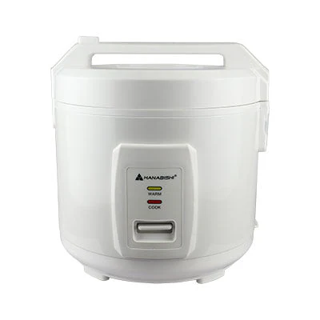

Hanabishi White Jar Type Rice Cooker 1.0 L HJC10WHT
₱647.50 ₱1,295.00
- 1 liter capacity 5 cups per serving
- Cook and keep warm function
- Stylish lid cover with cool touch button
- Easy to use and clean
- White plastic inner steamer
- White rice scoop and measuring cup
- Rated voltage 220V
- Rated frequency 60Hz
- Wattage:400